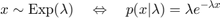
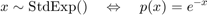

Anonymous functions
Contents
What Are Anonymous Functions?
An anonymous function is a function that is not stored in a program file, but is associated with a variable whose data type is function_handle. Anonymous functions can accept inputs and return outputs, just as standard functions do. However, they can contain only a single executable statement.
For example, create a handle to an anonymous function that finds the square of a number:
sqr = @(x) x.^2;
Variable sqr is a function handle. The @ operator creates the handle, and the parentheses () immediately after the @ operator include the function input arguments. This anonymous function accepts a single input x, and implicitly returns a single output, an array the same size as x that contains the squared values.
Find the square of a particular value (5) by passing the value to the function handle, just as you would pass an input argument to a standard function.
a = sqr(5)
a =
25
Many MATLAB® functions accept function handles as inputs so that you can evaluate functions over a range of values. You can create handles either for anonymous functions or for functions in program files. The benefit of using anonymous functions is that you do not have to edit and maintain a file for a function that requires only a brief definition.
For example, find the integral of the sqr function from 0 to 1 by passing the function handle to the integral function:
q = integral(sqr,0,1);
You do not need to create a variable in the workspace to store an anonymous function. Instead, you can create a temporary function handle within an expression, such as this call to the integral function:
q = integral(@(x) x.^2,0,1);
Variables in the Expression
Function handles can store not only an expression, but also variables that the expression requires for evaluation.
For example, create a function handle to an anonymous function that requires coefficients a, b, and c.
a = 1.3; b = .2; c = 30; parabola = @(x) a*x.^2 + b*x + c;
Because a, b, and c are available at the time you create parabola, the function handle includes those values. The values persist within the function handle even if you clear the variables:
clear a b c x = 1; y = parabola(x)
y = 31.5000
To supply different values for the coefficients, you must create a new function handle:
a = -3.9; b = 52; c = 0; parabola = @(x) a*x.^2 + b*x + c; x = 1; y = parabola(1)
y = 48.1000
You can save function handles and their associated values in a MAT-file and load them in a subsequent MATLAB session using the save and load functions, such as
save myfile.mat parabola
Functions with No Inputs
If your function does not require any inputs, use empty parentheses when you define and call the anonymous function. For example:
t = @() datestr(now); d = t()
d =
'01-Jan-2022 14:19:10'
Omitting the parentheses in the assignment statement creates another function handle, and does not execute the function:
d = t
d =
function_handle with value:
@()datestr(now)
Functions with Multiple Inputs
Anonymous functions require that you explicitly specify the input arguments as you would for a standard function, separating multiple inputs with commas. For example, this function accepts two inputs, x and y:
myfunction = @(x,y) (x^2 + y^2 + x*y); x = 1; y = 10; z = myfunction(x,y)
z = 111
In-Class exercise
Write an anonymous function to calculate the exponential distribution:

Then, use the anonymous function you just made as part of a new anonymous function to calculate the standard exponential distribution:

Then, read the MATLAB documentation for fplot and see if you can do anything with it here.